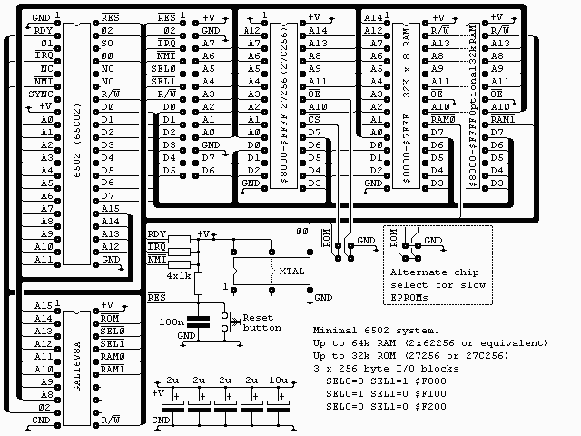

|
|
An expandable 6502 SBC. By Lee Davison. |
|

The circuit consists of a 6502, one or two 32k x 8 RAMs, a 32k x 8 EPROM, glue chip (GAL16V8A), a 1.832 MHz oscillator and an expansion connector.The use of a GAL for the glue chip allows a complete change of the memory map without any circuit changes. This makes the board very versatile as new interfaces or changes in ROM or RAM requirements can be accommodated without recourse to the soldering iron. For anyone interested an example set of equations for this chip are in sbc.pld and can be compiled with WinCUPL. The fuse file, sbc.jed and the compiler listing, sbc.txt are also included.
Software.
| Last page update: 29th August, 2003. | e-mail me
 |